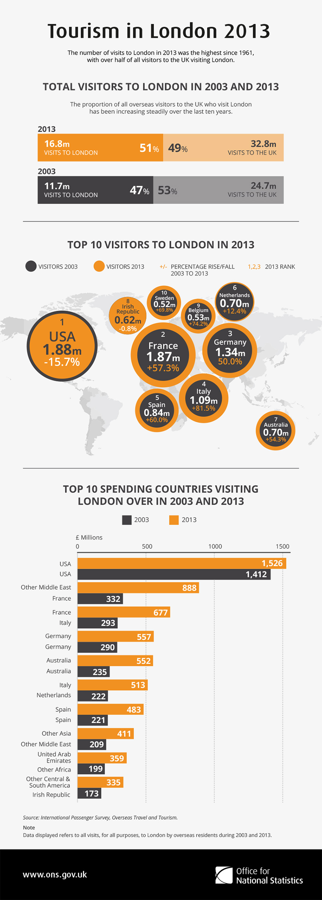

Office for National Statistics
Case studies and work examples from my role as the Digital Design Lead within the Data Journalism Team at ONS.
Key projects (external links)
Page contents
Background
Between 2015-2017, I worked as the Digital Design Lead within the Data Journalism team at ONS, managing a team of six designers. The team also included developers and data journalists – I reported to the head of data visualisation.
The newly formed Data Journalism Team was initially and experiment, created to challage stakeholders perception within the business that our users wated to consume technical statistical releases in PDF format only.
We worked closely with statistical areas within the business to create content for a different audience that didn't want to consume statistical information in the traditional way. We published out content on the Visual.ONS and worked closeley with media organisations to syndicate our content giving us much further impact and reach.
Visual.ONS was a huge success, consistently outperforming our traditional ways of disseminating information in terms of website hits and reach. Visual.ONS is now part of the national archives and this type of content is regularly published on the main ONS website.
Responsibilities
As the Digital Design Lead, I was responsible for coordinating the production of design work across a range of digital and media. I led a team of designers who provided design work for the ONS website, Visual ONS website and social media channels. I worked closely with the Head of Data Visualisation and the Visual Journalism Manager to deliver a range of products that connected ONS data with its users in new innovative and creative ways.
I was also responsible and managing the ONS brand during this period, regularly providing expertise and design work for more traditional print channels.
Work examples
UK trade in goods
https://www.ons.gov.uk/visualisations/dvc514/worldmap/index.html
An interactive data visualisation to explore the UK trade in goods with 234 countries by 125 commodities.
Visualising the data in this way allowed users to gain a better understanding of what goods the UK traded with other countries and trends over time. The barcode plot was an effective way of displaying all the import and export data in one chart while prividing the ability to highlight individual values to see how countries compared.
I explored the best way to present the data, developed the visual design and coordinated the build and publishing process with the development team.
Unpaid work calculator
https://www.ons.gov.uk/visualisations/dvc473/index.html
The idea behind the calculator was to enable users to explore how much money they could earn if someone paid them to carry out their everyday tasks such as cooking, cleaning, ironing and volunteering.
Using 2016 data on earnings, I was able to estimate how much money you could earn for doing these tasks if you could only find someone to pay you.
I was responsible for the concept development, visualisation, design and coordinating development.
Gender pay gap
https://www.ons.gov.uk/visualisations/dvc384/explorer/index.html
Interactive data visualisation to explore the gender pay gap by occupation. I chose a dot plot chart to show the distribution and gap in pay. I was responsible for the design, visualisation and coordinating development.
Healthy life expectancy
https://www.ons.gov.uk/visualisations/dvc413/barcodes/barcode/index.html
Data explorer comparing healthy life expectance in areas across England.
https://www.ons.gov.uk/visualisations/dvc413/sliders/smoking/index.html
Interactive illustrating what could happen to an area's healthy life expectancy if the number of smokers changed.
Travel trends
Slope chart showing the number of visits the the UK by country and their spending.
Tourism in London
Economic activity of the migrant population

Social media graphics
I developed a visual style and icon library for social media graphics which is still used to this day. This was documented in a style guide published on github.
Busy creating social media templates this afternoon, adding guidance to the Digital Publishing Design Manual next pic.twitter.com/sZMHAfYyIy
— Rhodri Griffith (@RhodGriffith) July 21, 2017
Key results and achievements
Impact and reach
My design work was regularly used by the wider media (Guardian, BBC) in their story-telling, often reaching a wide and varied audience.
The unpaid work calculator received 50,000 unique hits within the first 24 hours of publishing and was used live on the Victoria Derbyshire on BBC1.
that's brilliant!
— Rob Fry (@fryford) November 11, 2016
Conferences and training
I regularly spoke at conferences about data visualisation best practices and ran the internal training course at ONS with a group of other data visualisation designers. Often presented bilingually!
Rhodri Griffith @ons delights us all with quirky infographics. Mwy dda i wrando yn Ngymraeg #digwyddiaddwyieithog #commscymru pic.twitter.com/aLIBRjJSbh
— Emma Kirsty (@emmawolski) November 10, 2016